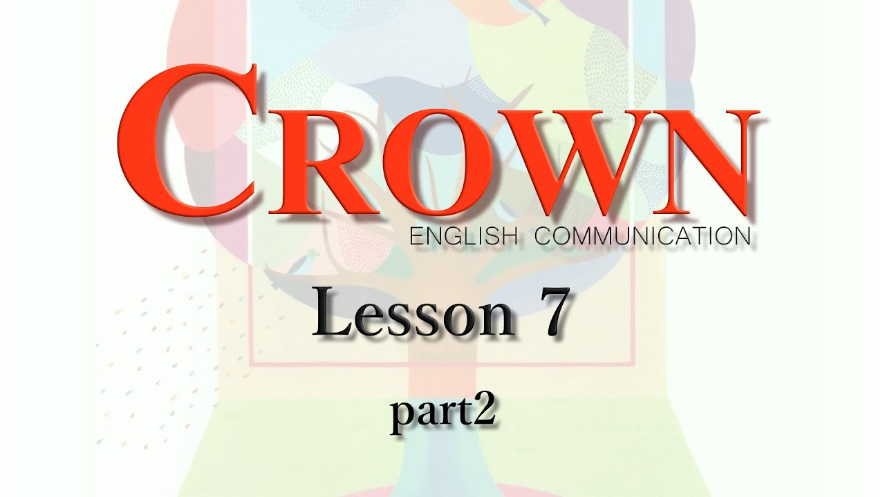

おすすめ
【ComⅡ】Lesson7-2和訳 重要表現
【ComⅡ】Lesson7-2和訳 重要表現

宮田師の訳を文字起こししたものです。もしもミスがあった場合は教えて下さい。
科学と技術は私たちに快適な生活をもたらしました。しかし、時々私たちの技術は自然界にダメージを与えてきたのである。科学ジャーナリストであるジャニン・ベニスさんは私たちの技術を自然に調和させる方法である、バイオミミクリーを提案した。
地球上で人間ほど多くのことを成し遂げた生き物はいない。私たちは学校、大学、病院、銀行といった建築のみならず、飛行機、列車、コンピュータ、携帯、薬といった多くの役に立つものを生み出した。
こうしたもののおかげで私たちはいたる所で移動し、情報を素早く集め、学び、そして病気を治療できる。しかし、私たちが生み出しているものは、有毒な可能性がある。殺虫剤は昆虫を殺すが、土壌を汚染することもある。私たちは車を必要とするが、二酸化炭素は地球温暖化の要因の一つかもしれない。
私たちは次のような質問に答えなければならない。「もし私たちが自然と調和して生まれていくとすれば、私たちは快適な生活様式を送ることができるのでしょか。」言い換えると、どのようにすれば、私たちは持続可能な生活を送ることができるのだろう。
定期テストでの本文穴埋めはこの中から出題されます。訳と合わせて要確認。
・No other living thing
・far and wide
・in harmony with
・In other words